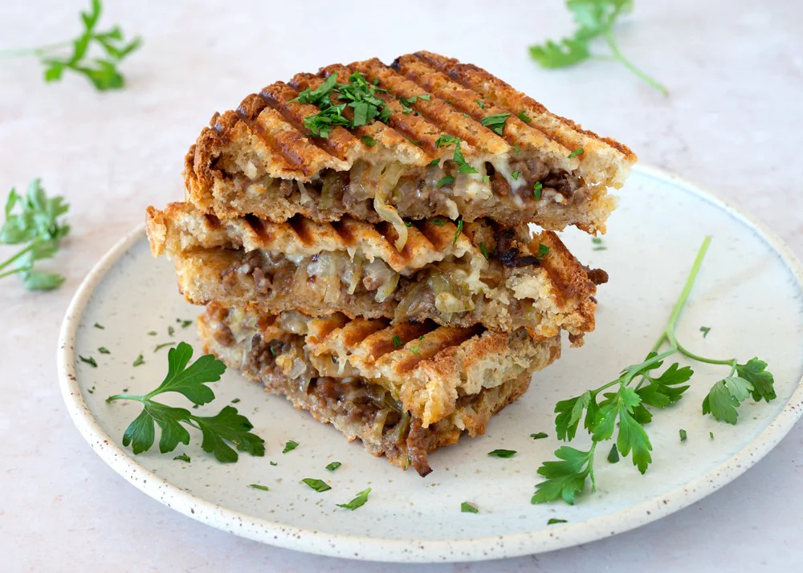

Cowboy toast

Lækker toast, nem at lave, mætter godt. Virkelig velsmagende
Ingredienser
- 2 løg, skåret i tynde skiver
- 30 g smør
- 400 g hakket oksekød
- 1 spsk worcestershire sauce
- 1 spsk koncentreret tomatpure
- 1 tsk dijon sennep
- 1 tsk røget paprika
- 0,5 dl grøntsagsboullion, afkølet
- 1 tsk majsstivelse
- 1 spsk olivenolie, til stegning
- salt
- sort peber, friskkværnet
- 8 skiver toastbrød
- 100 g cheddar ost
- 4 spsk sød chilisauce
- 1 spsk bredbladet persille, finthakket
Fremgangsmåde
- smelt smør på en pange ved middelvarme og kom løgene på
- Lad dem simre ved lave - middelvarme, til de bliver klare og helt bløde
- Kom løgene i en skål og sæt dem i køleskabet, så de køler hurtigt af
- Brun oksekødet under konstant omrøring på en varm pange med olie.
- Smag godt til med worcestershire sauce, tomatpuré, sennep, røget paprika, salt og peber
- Rør majsstivelse ud i grøntsagsboullion og rør det i kødet Kog det op og lad den simrer kortvarigt
- Kom det krydrede kød i en skål og sæt i køleskabet, så det køler hurtigt af
- Smør lidt chilisauce på halvdelen af brødskiverne og læg en skive cheddarost på.
- Fordel det afkølede krydrede kød og de bløde løg på og afslut med endnu en skive cheddar og brød.
- Rist toastene på begge sider i en toaster, på en pande med smør eller i ovnen ved 200 grader, varmluft i 15-17 minutter eller til brødet er sprødt og osten smeltet.